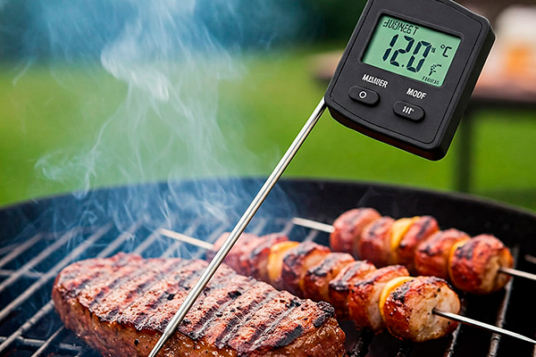

Precisão é Tudo: Por que Usar um Termômetro Digital no Churrasco?
Você já investiu em uma boa carne, preparou a brasa com cuidado, aplicou aquele tempero especial... mas na hora H, a carne passou do ponto ou ficou crua por dentro? Frustrante, não é? Muitos churrasqueiros experientes confiam no toque ou no tempo, mas a verdade é que a maneira mais **confiável e consistente** de garantir o ponto perfeito é usando um **termômetro digital de alimentos**.
Pode parecer um preciosismo para alguns, mas entender a importância da temperatura interna e usar a ferramenta certa para medi-la pode ser o divisor de águas entre um churrasco bom e um churrasco **inesquecível**.
Por que a Temperatura Interna é Crucial?
- Garante o Ponto Desejado:** A cor externa da carne nem sempre reflete o quão cozida ela está por dentro. Fatores como intensidade da brasa, espessura do corte e temperatura inicial da carne influenciam muito. O termômetro mede o que realmente importa: a temperatura no centro da peça, que define o ponto (mal passado, ao ponto, etc.).
- Evita Carne Crua ou Passada Demais:** Cozinhar "de menos" pode ser um risco à saúde (especialmente com aves e porco) e desagradável ao paladar. Cozinhar "demais" resulta em carne seca, dura e sem graça. O termômetro elimina a adivinhação.
- Consistência:** Permite replicar resultados perfeitos todas as vezes. Se você descobriu que adora sua picanha a 60°C internos, o termômetro garante que você atinja esse ponto sempre.
- Segurança Alimentar:** Para carnes como frango e porco, atingir a temperatura interna mínima recomendada é essencial para eliminar bactérias nocivas (geralmente 74°C para aves e 71°C para porco moído ou peças inteiras).
- Economia:** Evita que você desperdice cortes caros por cozinhá-los de forma inadequada.
Tipos de Termômetros Digitais para Churrasco

Existem basicamente dois tipos principais úteis para churrasco:-
Termômetro de Leitura Instantânea (Espeto):
- Possui uma sonda (espeto) que você insere na carne para uma leitura rápida (geralmente em 2-5 segundos).
- Ideal para verificar o ponto de bifes, hambúrgueres, frango e outras peças menores durante o cozimento.
- Você o utiliza para checagens pontuais, não o deixa na carne durante todo o processo.
- Vantagens: Rápido, versátil, geralmente mais acessível.
- Desvantagens: Requer abrir a tampa da churrasqueira (se usar) para medir, não monitora continuamente.
-
Termômetro com Sonda e Fio (Remoto):
- Consiste em uma ou mais sondas conectadas por um fio resistente ao calor a uma unidade base que fica fora da churrasqueira. Alguns modelos possuem transmissores sem fio para um receptor portátil ou conexão com smartphone via Bluetooth/Wi-Fi.
- Você insere a sonda na carne no início do cozimento e acompanha a temperatura interna em tempo real sem precisar abrir a churrasqueira.
- Muitos modelos permitem definir alarmes para a temperatura alvo.
- Vantagens: Monitoramento contínuo, ideal para assados longos (costela, brisket, peru), maior precisão para atingir o ponto exato, evita perda de calor ao não abrir a tampa.
- Desvantagens: Geralmente mais caro, requer cuidado com o fio perto do calor intenso.
Como Usar Corretamente
- Inserção:** Insira a sonda na parte mais espessa da carne, evitando ossos ou grandes bolsões de gordura, que podem dar leituras imprecisas. Para aves, mire na parte mais grossa da coxa, sem tocar no osso.
- Calibração:** Verifique se seu termômetro está calibrado (a maioria vem calibrada, mas pode desregular com o tempo). Um teste simples é colocá-lo em um copo com água e gelo; deve marcar 0°C. Consulte o manual para instruções de calibração, se necessário.
- Limpeza:** Limpe a sonda após cada uso com água morna e sabão.
- Cozimento Residual (Carryover Cooking):** Lembre-se que a temperatura interna continua subindo alguns graus após retirar a carne do fogo. Retire a peça da grelha um pouco *antes* de atingir a temperatura final desejada (geralmente 2-5°C antes, dependendo do tamanho da peça e da temperatura de cozimento).
Conclusão
Investir em um bom termômetro digital é um passo simples que traz resultados enormes para a qualidade e segurança do seu churrasco. Ele tira a adivinhação da equação e coloca você no controle total do ponto da carne. Seja um modelo de leitura instantânea para o dia a dia ou um com sonda para projetos mais longos, essa ferramenta se tornará rapidamente indispensável na sua jornada de mestre churrasqueiro!
Quer Precisão Máxima no seu Churrasco?
Receba reviews de termômetros, tabelas de temperatura detalhadas e dicas para nunca mais errar o ponto!